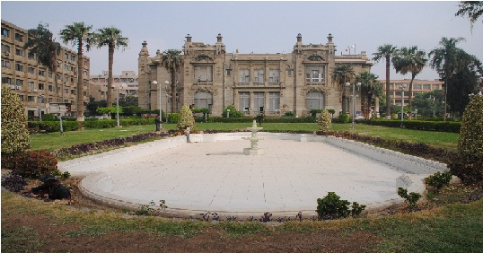

الدراسه في الجامعه عين الشمس

بعد ثورة 23 يوليو 1952، اقترح أن تكون أسماء الجامعات المصرية لها جذور ومعالم تاريخية من البلاد هكذا في 21 فبراير 1954 تغير اسم الجامعة إلى "هليوبلس"، وبعد ذلك تغير في نفس السنة إلى اسمها الحالي "عين شمس" العربي لهليوبلس أو "أون" التي كانت أقدم جامعة في التاريخ. جامعة أون تأسست من حوالي 5000 سنة مضت، وكان عندها شهرة واسعه ومركز من المعرفة والتعلم خصوصآ في علم الفلك والهندسة والطب.
ربما المثال المتقن للمعرفة والمهاره في معلمون "أون" هو "أمحتوب" الكاهن الرئيسي والوزير والمصمم الذي في 2700 قبل الميلاد صمم أول التركيب الكبير للحجارة، عَرفَ في التاريخ بأسم "زوسر" في "سقارة". يُصرّحُ ورق البردي " Westcar" أيضآ بأن مؤسس السلالة الخامسة كان خوري جامعة "أون" قبل اعتلاء العرش. على أية حال الانجاز الأكثر أهمية لجامعة "أون" كان النداء لعبادة الاله الوحيد، القرص الشمسي "لآتون"، على يدي "اخناتون" الذي نادى بأفكار كهنة "أون"
الحرم الجامعي
ربعة في العباسية (الحرم الرئيسي و الحرم الثاني/عين شمس التخصصي و كلية الطب/كلية التربية و كلية الهندسة)، هليوبوليس (كلية البنات و كلية التربية)، شبرا الخيمة (كلية الزراعة) على التوالي.
- جامعة عين شمس تشمل سبعة أحرم جامعية، جميعها محددة في القاهرة. إدارة الجامعةَ، كلية الاداب وكلية الحقوق وكلية العلوم، كلية الحاسبات والمعلومات، كلهم موجودين في الحرم الجامعي الرئيسي في شارع الخليفة المأمون في العباسية. أما كلية التجارة، كلية الألسن،كلية الصيدلة، كلية طب الأسنان، معهد الطفولة، معهد البيئة سويآ مع مستشفى عين شمس التخصصي واقعين في الحرم الجامعي الثاني على الجانب الآخر من الشارع.
كلية طب عين شمس وكلية التمريض سويآ في مستشفيات الجامعة واقعة في الحرم الجامعي الثالث في العباسية. كلية الهندسة، كلية التربية النوعية و كليةالتربية وكلية البنات وكلية الزراعة واقعة كُلّ على حدا في حرم جامعي في العباسية، هليوبوليس، شبرا الخيمة على التوالي.
وكان لابد وان توفر الجامعه السكن الملائم للطلاب القادمين من محافظات مصر البعيده ،,فانشأت المدينة الجامعيه للطلبه والطالبات ،,وتقع المدينة الجامعيه للطلبه امام الحرم الجامعى مباشره ،كما تقع المدينة الجامعية للطالبات في مصر الجديده ملاصقه تماما لكليه بنات عين شمس هذا بالاضافه إلى عده بيوت خارجيه تستأجرها الجامعه لاستيعاب العدد المتزايد للطلبه والطالبات القادمون من خارج القاهره للدراسه في جامعه عين شمس, ويستوعب قطاع المدن الجامعية أكثر من 4000 طالب وطالبه سنويا ولا تزيد الرسوم المقرره للسكن بالمدينة الجامعيه ما يعادل 10 دولارات شهريا تشمل الاقامه وتغذيه كامله تحتوى على ثلاث وجبات يوميا بجانب توفير خدمات ترفيهيه وانشطه مختلفه تساهم في اعداد جيل قادر على تحمل المسئوليه في المستقبل القريب
شعار الجامعة
شعار الجامعةِ هو المسلّة والصقران، يؤسس رابطة بين الاسم والتاريخ القديم للجامعة. تمثل المسلة بيت الحياة في مدينة أون، بينما الصقران يرمزان لبيت الإله المصري في ذَلِك الوَقت
المقر الإداري
إن الجامعة الآن واقعة في منطقة قصر الزعفران، الذي بني أثناء حكم الخديوي إسماعيل. سمى القصر بهذا الإسم لأن المنطقة المحيطة به كانت مشهورة بمزارع الزعفران.
القصر كان يستخدم لاستضافة مكاتب إدارة الجامعة المصرية عندما أسس في عام 1925. وزارة الخارجية كانت تستخدمه من قبل كدار ضيافة لإسكان الزوار المهمين. شَهدَ القصرُ أيضا تَوْقيع معاهدة 1936 بين مصر وبريطانيا العظمى. و يقال أن الملك فاروق ولد في هذا القصر. و أخيراً في 1952، أصبح المقر الإداري لجامعة عين شمس
الإقامة للمغتربين
تقع المدينة الجامعية للطلاب أمام الحرم الجامعي مباشرة، بينما تقع المدينة الجامعية للطالبات في مصر الجديدة بجوار كلية البنات. هذا بالإضافة إلى عدة بيوت خارجية تستأجرها الجامعة لاستيعاب الأعداد المتزايد من الطلاب والطالبات القادمين من خارج القاهرة
انشاء الكليات
تتضمن الجامعة 15 كلية ومعهدين عاليين. في1950 ، كان هناك فقط ثمان كليات: كلية الآداب، كلية الحقوق، كلية التجارة، كلية العُلُوم، كلية الهندسة، كلية طب عين شمس، كلية الزراعة، وكلية البنات
في 1969، كلية التربية، عرفَت منذ 1880 ككلية المعلمين، أصبحت الكليةَ التاسعةَ في الجامعة، في 1973 أصبحت كلية الألسن الكلية العاشرة في الجامعة. على أية حال تاريخ هذه الكلية يَعود إلى1835
في 1994 صدر مرسوم لتأسيس كليّتين أكثر، كلية الصيدلية وكلية طب الأسنان، الدراسة الفعلية بدأتْ السنة التاليةَ في كلتا الكليتين. في نفس السنة قُرّرَ تَأسيس كليّةِ الحاسباتِ والمعلومات، وبَدأتْ الدراسةَ السنة التاليةَ. الكليّة الأخيرة التي انضمت إلى الجامعةَ كليّةُ التربية النوعية، في 1998. وكليّة التمريض تأُسّستْ في 1980، ومعهد الطفولة تأسس في 1981، ومعهد البيئة تأسس في 1982